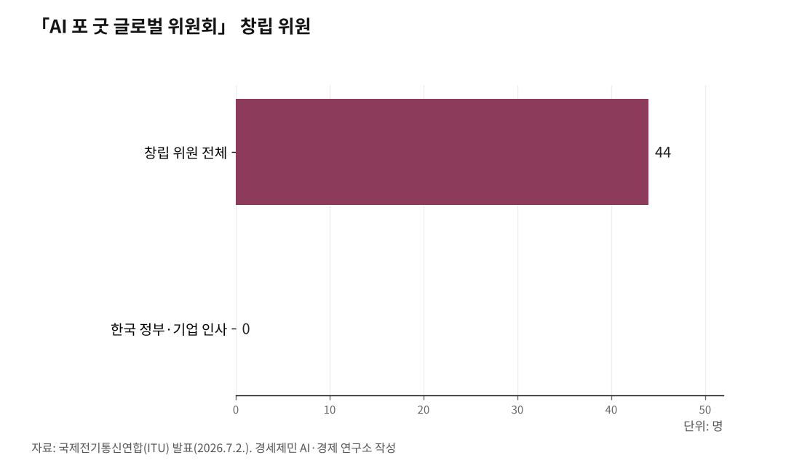

[주간 AI 칼럼] 유엔, AI 함께 다스릴 틀 제네바서 첫 가동
193개국 참여 'AI 거버넌스 글로벌 대화' 7월 6~7일 첫 회의
빅테크 수장 참여 'AI 포 굿 위원회' 출범…한국은 유엔 AI 허브 유치 추진
인공지능(AI)을 세계가 함께 다스리는 틀이 이번 주 스위스 제네바에서 처음 가동된다. 유엔 193개 회원국이 모두 참여하는 'AI 거버넌스 글로벌 대화'가 7월 6일과 7일 첫 회의를 열고, 이에 앞서 7월 2일에는 각국 정상과 빅테크 최고경영자가 함께하는 'AI 포 굿 글로벌 위원회'가 출범했다.
193개 나라가 AI 규칙을 놓고 유엔이라는 한자리에 앉는 것은 이번이 처음이다. 유엔 글로벌 AI 허브 유치를 추진하는 한국에도 중요한 무대다.
1. 제네바 디지털 주간 개막
국제전기통신연합(ITU)은 7월 6일부터 10일까지 제네바에서 '디지털 주간'을 연다. ITU는 유엔에서 정보통신 분야를 맡는 전문기구다.
이 기간 큰 행사 세 개가 이어진다. 'AI 거버넌스 글로벌 대화'가 6일과 7일, 정보사회세계정상회의(WSIS) 포럼이 6일부터 10일까지, 'AI 포 굿 글로벌 서밋'이 7일부터 10일까지 열린다. AI 거버넌스는 AI를 어떤 규칙으로 다스릴지 정하는 일을 말한다.

2. 193개국이 처음 모인다
글로벌 대화는 유엔총회가 2025년 8월 결의로 설치한 회의체다. 2024년 9월 유엔 회원국이 합의한 '글로벌 디지털 협약'이 근거다. 유엔이 위임해 처음 여는 AI 거버넌스 대화다.
유엔 193개 회원국이 전부 참여하고 기업과 시민사회, 학계도 함께한다. 첫 회의는 제네바 팔렉스포 전시장에서 열리고, 두 번째 회의는 2027년 5월 뉴욕에서 이어진다. 각국이 AI 규칙을 놓고 경험과 사례를 나누는 자리다.
이틀 동안 고위급 회의와 주제별 회의, 부대 행사가 이어진다. 안토니우 구테흐스 유엔 사무총장이 참석하고, 독립 국제 AI 과학패널이 예비 보고서를 발표한다. 회의는 유엔 웹TV로 생중계된다.
유네스코는 어느 나라도 혼자서는 AI가 주는 기회와 어려움을 감당할 수 없다며, 이 대화는 기술 선진국만 아니라 모든 나라가 바라는 바를 반영하려고 만들어졌다고 밝혔다.
3. 'AI 포 굿' 위원회 출범
ITU는 7월 2일 'AI 포 굿 글로벌 위원회' 출범을 발표했다. 폴 카가메 르완다 대통령과 마크 베니오프 세일즈포스 최고경영자가 공동위원장을, 도린 보그단-마틴 ITU 사무총장이 부위원장을 맡았다.
창립 위원은 44명이다. 젠슨 황 엔비디아 최고경영자, 앤디 재시 아마존 최고경영자, 브래드 스미스 마이크로소프트 사장, 잭 클라크 앤트로픽 공동창업자 등 AI 기업 지도자가 대거 들어갔다. 에스토니아와 아이슬란드 대통령, 싱가포르와 나이지리아 장관 같은 정부 인사, 세계무역기구(WTO)와 유네스코 수장도 참여한다.
ITU는 아직 인터넷을 쓰지 못하는 사람이 22억 명으로 세계 인구 4분의 1이라고 밝혔다. 위원회는 이 격차를 줄여 AI 혜택이 불평등을 키우지 않게 하는 일을 핵심 과제로 꼽았다. 첫 회의는 7일부터 열리는 AI 포 굿 서밋에서 연다.
출범식에서 카가메 대통령은 기술은 선을 위한 힘이 되어야 한다며 함께 불평등을 줄이자고 말했다. 베니오프 최고경영자는 AI가 약속하는 미래의 바탕에는 신뢰가 있어야 한다고 말했다. 그는 첫 회의에서 AI 기반시설 강화, 보건과 교육과 식량안보와 재난 대응 분야 AI 활용, 신뢰와 안전 확보를 다룬다고 밝혔다.
위원 명단에는 무케시 암바니 릴라이언스 회장, 일본 AI 기업 사카나AI 공동창업자 렌 이토, 중국 통신장비 기업 ZTE 최고경영자 쉬쯔양도 있다. 미국과 인도, 일본, 중국 기업이 한 위원회에 이름을 올렸다. 위원회는 ITU와 유네스코가 함께 꾸려 온 브로드밴드위원회 경험을 바탕으로 만들어졌다.
4. 빅테크 참여, 기대와 비판
기대와 비판이 같이 나온다. ITU는 기술을 만드는 지도자와 정책을 정하는 지도자를 연결해 개발도상국 참여까지 보장하겠다고 밝혔다. 보그단-마틴 사무총장은 어느 조직도 혼자서는 AI를 인류 전체에 봉사하게 만들 수 없다고 말했다.
반면 미국 독립언론 커먼드림스는 7월 1일 위원회가 빅테크 경영진으로 가득 찼다고 지적했다. 규제 대상인 기업이 규칙을 논의하는 자리에 대거 앉았다는 뜻이다.
5. 한국, AI 허브 유치 추진
한국에도 남 일이 아니다. 한국 정부는 유엔 기구들이 참여하는 '글로벌 AI 허브'를 한국에 유치하는 방안을 공식 추진하고 있다.
정부는 지난 3월 17일 제네바에서 국제노동기구(ILO)와 세계보건기구(WHO), 유엔개발계획(UNDP) 등 6개 유엔 기구와 협력의향서를 맺었다. 김민석 당시 국무총리가 지켜보는 가운데 류제명 과학기술정보통신부 2차관이 한국 대표로 서명했다. 협력의향서는 함께 일할 뜻을 문서로 확인하는 약속이다. 여기에는 ITU와 국제이주기구(IOM), 세계식량계획(WFP)도 이름을 올렸다.
판은 더 커졌다. 5월 21일 서울에서 열린 글로벌 AI 허브 비전 선포식에서 9개 국제기구와 세계은행 등 5개 다자개발은행이 공동성명을 냈다. 참여 기관이 두 달 만에 14곳으로 늘었다. 이번 제네바 회의는 유엔 차원 AI 논의가 가는 방향을 보여주는 무대다.
다만 이번 위원회 창립 위원 44명 명단에 한국 정부와 한국 기업 인사는 없다. 정부는 유엔 기구들과 접촉하며 유치 활동을 이어가고 있다.
참고문헌
· "Global leaders launch AI for Good Global Commission to expand access, strengthen trust and accelerate impact", ITU, 2026.7.2., https://www.itu.int/en/mediacentre/Pages/PR-2026-07-02-AI-for-Good-Global-Commission.aspx
· "Global Dialogue on AI Governance", United Nations, 2026., https://www.un.org/global-dialogue-ai-governance/en
· "Global Dialogue on AI Governance, Geneva, 6–7 July", UNESCO, 2026.6.2., https://www.unesco.org/en/articles/global-dialogue-ai-governance-geneva-6-7-july
· "UN Creates 'AI for Good' Commission—Full of Big Tech Execs", Common Dreams, 2026.7.1., https://www.commondreams.org/news/united-nations-ai
· 「김민석 국무총리, 글로벌 AI 허브 유치 활동 개시」, 대한민국 정책브리핑(국무조정실), 2026.3.17., https://www.korea.kr/briefing/pressReleaseView.do?newsId=156749300
· 「글로벌 AI 허브」 비전 선포식 개최, 대한민국 정책브리핑(재정경제부), 2026.5.21., https://www.korea.kr/briefing/pressReleaseView.do?newsId=156763005
· "'UN 글로벌 AI 허브' 유치 가시권…"기본사회 등 韓 AI 세계 전파 기회"", 전자신문, 2026.3.30., https://www.etnews.com/20260330000334
※ 이 칼럼은 AI 프로그램 클로드를 활용해 작성했습니다.
사진 출처
· [대표사진] Groov3, "Palais des Nations unies, à Genève.jpg", 위키미디어 공용, CC0, https://commons.wikimedia.org/wiki/File:Palais_des_Nations_unies,_%C3%A0_Gen%C3%A8ve.jpg
※ 이 기사는 인공지능을 활용해 작성했습니다.
관련기사
- [AI동향] 정부 AI 예산 9조9000억원, 어디에 쓰이나
- [AI동향] '세계 AI 지배' 선언한 미국…강한 AI, 출시부터 통제
- [AI동향] 2026년 6월 (통합본)
- [AI동향] AI 투자, 반도체와 데이터센터로 몰린다
저작권자 © AI경세제민 무단전재 및 재배포, AI학습 및 활용 금지